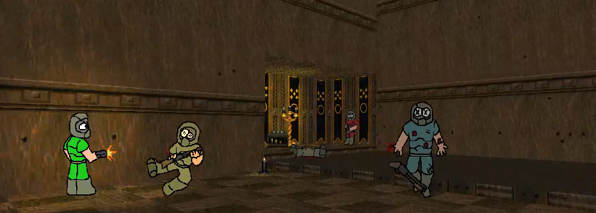

THE BONDS BEYOND FRAGS UPDATE IS HERE!
April 17, 2026
Hello everybody!! kinda late right?, i had released
the new update in Doomworld and the Zan forums like 8
hours ago, but i also had to update the website!!
DAAAAMNNNN!! you see how hard is to update a mod?,
anyways, right to the point now, the new update!
The TDM update has been released, at the moment im writing
this, its 12:25 am, this v1.9 build was released 8 hours ago,
and it comes with lotta new stuff compared to the first release!
First, we have the new 10 TDM maps!, with the nice detail that the
last 3 maps support 4 Teams!, awesomesauce.
Here's the list of the new maps:
THE DOOMLAD SKIN!
Now the cartoonish doomguys you see a lot in the art of the mod are playable, with custom death animations and armagedon!.
NEW BINDS!
You will see this and more in the Doomworld or Zandronum threads, pay a visit there to have a better look at it!.